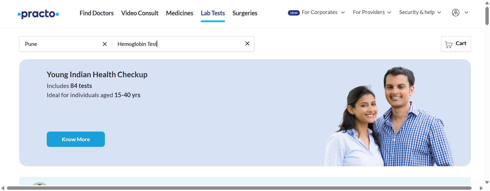

-
Checking functionality for Practo application
9:52:35 am / 00:01:14:539 Fail
Checking functionality for Practo application
07.11.2025 9:52:35 am 07.11.2025 9:53:49 am 00:01:14:539 · #test-id=1PassLogin to Practo and navigate to Hemoglobin TestPassLogin to Practo and navigate to Hemoglobin TestGiven User is on Practo websiteWhen clicks on Search city and selects cityAnd user clicks on Login / Signup buttonAnd user enters "10" and "11"And clicks on the login buttonAnd clicks on Search for TestAnd user enter "12"And selects the Haemoglobin test from the search resultsThen user should be on the Haemoglobin test page for Punecom.stepDefinition.LabTestStepDefinition.tearDown(io.cucumber.java.Scenario)Image
FailNavigate to Skin Consultation and Fill DetailsGiven User is on Practo websiteWhen clicks on Search city and selects cityAnd clicks on the Skin iconAnd clicks on Related Quetions-First OptionAnd clicks on Acne keeps coming back?And user enters name in name fieldAnd enters phone numberAnd clicks on continue buttonThen user should see the payment pagecom.stepDefinition.LabTestStepDefinition.tearDown(io.cucumber.java.Scenario)FailDisplays Error message for invalid phone numberFailDisplays Error message for invalid phone numberGiven User is on Practo websiteAnd clicks on Search city and selects cityStep skippedAnd scrolls down for Download Practo AppStep skippedAnd enters invalid "17"Step skippedAnd clicks on Send App LinkStep skippedThen user should see error message of invalid phone numberStep skippedcom.stepDefinition.LabTestStepDefinition.tearDown(io.cucumber.java.Scenario)FailFill form and Select slot for booking appointmentFailFill form and Select slot for booking appointmentGiven User is on Practo websiteWhen clicks on Search city and selects cityStep skippedAnd user clicks on Login / Signup buttonStep skippedAnd user enters "10" and "11"Step skippedAnd clicks on the login buttonStep skippedAnd click on one of the Top Booked Diagnostic TestsStep skippedAnd click on Book NowStep skippedAnd user fills all userDetails and clicks continueLabTestData.xlsx Step skippedAnd user selects address and clicks continueStep skippedAnd user selects slot and Confirms BookingStep skippedThen user should see messageStep skippedcom.stepDefinition.LabTestStepDefinition.tearDown(io.cucumber.java.Scenario)FailEnable Adding multiple test and display number of Test added in cartGiven User is on Practo websiteWhen clicks on Search city and selects cityStep skippedAnd start adding testsStep skippedAnd click on proceed to checkoutStep skippedThen user should see number of tests selectedStep skippedcom.stepDefinition.LabTestStepDefinition.tearDown(io.cucumber.java.Scenario)FailDisplay Error Message if age entered is less than 10 yearsFailDisplay Error Message if age entered is less than 10 yearsGiven User is on Practo websiteWhen clicks on Search city and selects cityStep skippedAnd start adding testsStep skippedAnd click on proceed to checkoutStep skippedAnd user enter "13","16" and genderStep skippedThen user should see error message for invalid ageStep skippedcom.stepDefinition.LabTestStepDefinition.tearDown(io.cucumber.java.Scenario)
-
org.openqa.selenium.NoSuchWindowException
4 tests
org.openqa.selenium.NoSuchWindowException
4 failedStatus Timestamp TestName Fail 09:53:34 am Given User is on Practo website Checking functionality for Practo application.Displays Error message for invalid phone number.Given User is on Practo websiteFail 09:53:38 am Given User is on Practo website Checking functionality for Practo application.Fill form and Select slot for booking appointment.Given User is on Practo websiteFail 09:53:42 am Given User is on Practo website Checking functionality for Practo application.Enable Adding multiple test and display number of Test added in cart.Given User is on Practo websiteFail 09:53:46 am Given User is on Practo website Checking functionality for Practo application.Display Error Message if age entered is less than 10 years.Given User is on Practo website -
java.lang.NullPointerException
4 tests
java.lang.NullPointerException
4 failedStatus Timestamp TestName Fail 09:53:38 am com.stepDefinition.LabTestStepDefinition.tearDown(io.cucumber.java.Scenario) Checking functionality for Practo application.Displays Error message for invalid phone number.com.stepDefinition.LabTestStepDefinition.tearDown(io.cucumber.java.Scenario)Fail 09:53:42 am com.stepDefinition.LabTestStepDefinition.tearDown(io.cucumber.java.Scenario) Checking functionality for Practo application.Fill form and Select slot for booking appointment.com.stepDefinition.LabTestStepDefinition.tearDown(io.cucumber.java.Scenario)Fail 09:53:46 am com.stepDefinition.LabTestStepDefinition.tearDown(io.cucumber.java.Scenario) Checking functionality for Practo application.Enable Adding multiple test and display number of Test added in cart.com.stepDefinition.LabTestStepDefinition.tearDown(io.cucumber.java.Scenario)Fail 09:53:49 am com.stepDefinition.LabTestStepDefinition.tearDown(io.cucumber.java.Scenario) Checking functionality for Practo application.Display Error Message if age entered is less than 10 years.com.stepDefinition.LabTestStepDefinition.tearDown(io.cucumber.java.Scenario) -
org.openqa.selenium.NoSuchSessionException
2 tests
org.openqa.selenium.NoSuchSessionException
2 failedStatus Timestamp TestName Fail 09:53:34 am Then user should see the payment page Checking functionality for Practo application.Navigate to Skin Consultation and Fill Details.Then user should see the payment pageFail 09:53:34 am com.stepDefinition.LabTestStepDefinition.tearDown(io.cucumber.java.Scenario) Checking functionality for Practo application.Navigate to Skin Consultation and Fill Details.com.stepDefinition.LabTestStepDefinition.tearDown(io.cucumber.java.Scenario)
-
@NavigateToTest
1 tests
@NavigateToTest
1 passedStatus Timestamp TestName Pass 09:52:35 am Login to Practo and navigate to Hemoglobin Test Checking functionality for Practo application.Login to Practo and navigate to Hemoglobin Test -
@InvalidAge
1 tests
@InvalidAge
1 failedStatus Timestamp TestName Fail 09:53:46 am Display Error Message if age entered is less than 10 years Checking functionality for Practo application.Display Error Message if age entered is less than 10 years -
@AppLink
1 tests
@AppLink
1 failedStatus Timestamp TestName Fail 09:53:34 am Displays Error message for invalid phone number Checking functionality for Practo application.Displays Error message for invalid phone number -
@AddMultipleTest
1 tests
@AddMultipleTest
1 failedStatus Timestamp TestName Fail 09:53:42 am Enable Adding multiple test and display number of Test added in cart Checking functionality for Practo application.Enable Adding multiple test and display number of Test added in cart -
@FormFilling
1 tests
@FormFilling
1 failedStatus Timestamp TestName Fail 09:53:38 am Fill form and Select slot for booking appointment Checking functionality for Practo application.Fill form and Select slot for booking appointment -
@Negative
2 tests
@Negative
2 failedStatus Timestamp TestName Fail 09:53:34 am Displays Error message for invalid phone number Checking functionality for Practo application.Displays Error message for invalid phone numberFail 09:53:46 am Display Error Message if age entered is less than 10 years Checking functionality for Practo application.Display Error Message if age entered is less than 10 years -
@SkinConsultation
1 tests
@SkinConsultation
1 failedStatus Timestamp TestName Fail 09:52:51 am Navigate to Skin Consultation and Fill Details Checking functionality for Practo application.Navigate to Skin Consultation and Fill Details -
@LabTest
6 tests
@LabTest
1 passed 5 failedStatus Timestamp TestName Pass 09:52:35 am Login to Practo and navigate to Hemoglobin Test Checking functionality for Practo application.Login to Practo and navigate to Hemoglobin TestFail 09:52:51 am Navigate to Skin Consultation and Fill Details Checking functionality for Practo application.Navigate to Skin Consultation and Fill DetailsFail 09:53:34 am Displays Error message for invalid phone number Checking functionality for Practo application.Displays Error message for invalid phone numberFail 09:53:38 am Fill form and Select slot for booking appointment Checking functionality for Practo application.Fill form and Select slot for booking appointmentFail 09:53:42 am Enable Adding multiple test and display number of Test added in cart Checking functionality for Practo application.Enable Adding multiple test and display number of Test added in cartFail 09:53:46 am Display Error Message if age entered is less than 10 years Checking functionality for Practo application.Display Error Message if age entered is less than 10 years -
@Positive
4 tests
@Positive
1 passed 3 failedStatus Timestamp TestName Pass 09:52:35 am Login to Practo and navigate to Hemoglobin Test Checking functionality for Practo application.Login to Practo and navigate to Hemoglobin TestFail 09:52:51 am Navigate to Skin Consultation and Fill Details Checking functionality for Practo application.Navigate to Skin Consultation and Fill DetailsFail 09:53:38 am Fill form and Select slot for booking appointment Checking functionality for Practo application.Fill form and Select slot for booking appointmentFail 09:53:42 am Enable Adding multiple test and display number of Test added in cart Checking functionality for Practo application.Enable Adding multiple test and display number of Test added in cart
Started
Jul 11, 2025 09:52:34 am
Ended
Jul 11, 2025 09:53:49 am
Features Passed
0
Features Failed
1
Features
Scenarios
Steps
Timeline
Tags
| Name | Passed | Failed | Skipped | Others | Passed % |
|---|---|---|---|---|---|
| @NavigateToTest | 1 | 0 | 0 | 0 | 100% |
| @InvalidAge | 0 | 1 | 0 | 0 | 0% |
| @AppLink | 0 | 1 | 0 | 0 | 0% |
| @AddMultipleTest | 0 | 1 | 0 | 0 | 0% |
| @FormFilling | 0 | 1 | 0 | 0 | 0% |
| @Negative | 0 | 2 | 0 | 0 | 0% |
| @SkinConsultation | 0 | 1 | 0 | 0 | 0% |
| @LabTest | 1 | 5 | 0 | 0 | 16.667% |
| @Positive | 1 | 3 | 0 | 0 | 25% |
System/Environment
| Name | Value |
|---|---|
| AppName | Eclipse |
| user | SDHINDLE |
| build | windows |